扉页
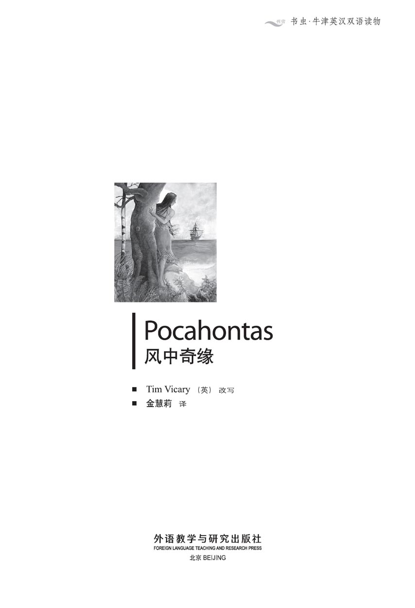
版权页
京权图字：01-2006-3291
Originally published by Oxford University Press, Great Clarendon Street, Oxford. © 2000
This edition is licensed for sale in the People's Republic of China only and not for export therefrom.
'Oxford' is a registered trademark of Oxford University Press.
只限中华人民共和国境内销售，不包括香港特别行政区、澳门特别行政区及台湾省。不得出口。
图书在版编目（CIP）数据
风中奇缘＝Pocahontas／（英）维卡里（Vicary，T.）改写；金慧莉译．—北京：外语教学与研究出版社，2007.7（2014.12 重印）
（书虫·牛津英汉双语读物）
ISBN 978-7-5600-6815-2
Ⅰ．①风… Ⅱ．①维…②金… Ⅲ．①英语—汉语—对照读物 ②中篇小说—英国—现代 Ⅳ．①H319.4:I
中国版本图书馆CIP数据核字（2007）第104934号
出版人： 蔡剑峰
责任编辑：田 娜
封面设计：孙莉明
出版发行：外语教学与研究出版社
社 址：北京市西三环北路19号（100089）
网 址：http://www.fltrp.com
版 次：2007年8月第1版
书 号：ISBN 978-7-5600-6815-2
* * *
凡侵权、盗版书籍线索，请联系我社法律事务部
举报电话：（010）88817519 电子邮箱：banquan@fltrp.com
法律顾问：立方律师事务所 刘旭东律师
中咨律师事务所 殷 斌律师
内容简介
内容简介
1607年，英国人来到北美洲的弗吉尼亚，他们想在这片新大陆上开始崭新的生活，并在这里安家落户。他们建造了一座城镇，取名为“詹姆斯敦”，它是以英格兰国王詹姆斯一世的名字命名的。
在这些英国人看来，弗吉尼亚是一个全新的世界，而对于北美洲的印第安人来说，就没什么新鲜的了。印第安人生活在这里，他们的祖祖辈辈们很久前就居住在这里了。这里是他们的国度，是他们的家园。印第安人可不喜欢这些来自大洋彼岸的白人们。
在这些英国人当中，有一个叫约翰·史密斯的人乘着一艘小船逆流而上，印第安人发现了他，并把他带到首领波瓦坦酋长那里。印第安人本想杀了他，但波瓦坦有一个漂亮的女儿，名叫波卡洪塔斯。从她凝望着约翰·史密斯那双蓝蓝的眼睛的那一刻起……一段有关两个国家、两个人以及一段不了情的广为人知的故事就这样拉开了序幕。
POCAHONTAS
POCAHONTAS
In 1607 the English come to Virginia, in North America. They want to begin a new life, and to make their home in the New World. They build a town and call it Jamestown, after King James of England.
Virginia is a new world for the English, but it is not new for the Indian people of North America. They live there; their fathers and their grandfathers lived there before them. It is their country, their home. And they do not like these white men from across the sea.
One of the Englishmen, John Smith, goes up the river in a boat, but the Indians find him and take him to the great King, Powhatan. The Indians want to kill him, but Powhatan has a daughter — the beautiful Pocahontas. She looks into John Smith's, blue, blue eyes...and so begins a famous story of two countries, two people, and a love without end.
目录
1 The English in Virginia
1
The English in Virginia
In January 1607 three ships left England and sailed to America. There were a hundred and fifty men on the ships, and they wanted to find a new world in the west — a home in a new and exciting country.
The ships were at sea for four months, and they arrived in Virginia on the 26th April, 1607. After four long months at sea the men were tired, ill, and hungry. But Virginia was beautiful. The sky was blue, and they could see rivers, and flowers, and forests of tall trees. The Englishmen were very happy.
But the Algonquin Indians of Virginia were not happy. They were afraid of the Englishmen and their ships. 'This is our home,' they said. 'We don't want these white men here. We must fight them.'
But some Indians said: 'No, wait. These men are interesting. Let's make friends with them, and learn about them.' So the Indians tried to talk to the Englishmen, and gave them food to eat. The Englishmen gave things to the Indians, too — little knives and pictures and beads.
The Englishmen began to build a little town. They called it Jamestown, because the King of England was called James. They called the river James River, too.
The leaders of the Englishmen were Christopher Newport, Edward Wingfield, and John Smith. They wanted to learn more about Virginia, so Smith and Newport took twenty men and went up the river in a small boat.
The other men stayed in Jamestown with Wingfield. They began to build houses, and to make gardens and fields outside the town.
'The fields are more important than the houses,' said Wingfield. 'And we must work quickly, because it's nearly summer now. We must have corn and vegetables for the winter. '
But it was not easy. The weather was hot, and the men were tired after four months at sea. Some men worked hard, but many sat in the sun, and did nothing. The Indians watched, and waited.
Smith and Newport went a hundred kilometres up the river. They visited Indian villages and talked to a lot of Indians. Some of the Indians were friendly, and some were not. When Smith and Newport came back to Jamestown, Wingfield was very pleased to see them.
'I was afraid for you,' he said. 'But you're not dead!'
'No, of course not,' said Smith. 'What's the matter? '
'It's the Indians,' Wingfield said. 'They're trying to kill us. Yesterday, they nearly killed me!'
'Well, what did you do?' Smith asked. 'Our men have guns, and the Indians are very afraid of guns.'
'But there were hundreds of Indians,' said Wingfield, 'and...we weren't ready. Our guns were on the ships. '
'Why?' asked Smith angrily. 'The men must always be ready; they must carry their guns with them. The Indians tried to kill you because they weren't afraid of you.'
'Yes, but—we must be nice to them,' said Wingfield.
'We can be friendly, but we must be careful first,' said Smith. 'We must build good walls round the town, and put the big guns from the ships on them. Then the Indians can't kill us. '
For a month everyone worked hard. They built walls round the town, and moved the big guns from the ships. But the men were afraid to work in the fields, because of the Indians. And the sun got hotter, and hotter.
In June Newport went back to England with two of the ships. A hundred and five men stayed in Jamestown. They had very little food. The corn from England was now bad, and the new corn in the fields was not ready. The river water was bad too, and soon many of the men were ill with a fever. Forty-six men died that summer.
Some of the men tried to leave Jamestown and go home in the ship, but Smith stopped them. 'We're here to work, and to build a new town,' he said. 'But first, we must find food. There are birds in the sky, fish in the river, animals in the forest — we must kill them and eat them. And we must get corn from the Indians, too. I can do that.'
Smith wasn't afraid of the Indians, but he was always very careful. He carried his gun all the time. Most of the Indians were afraid of Smith, but they liked him too. He was friendly, and he loved their beautiful country. And he learned their language, because he wanted to talk to them and understand them. Often, he gave the Indians little things from England, and they gave him food.
But when winter came, there were only fifty men alive in Jamestown. They had some food, but they needed more. The Virginian winter is long and cold, and fifty men need a lot of food.
In December Smith went up the river in a boat with nine men. Two of the friendly Indians went with them. It was very cold, and the Englishmen were hungry. But Smith was happy and excited.
'I'm going to find food for Christmas,' he said to the men in Jamestown. 'Wait for me here, and work hard! This is a beautiful country, and we're going to stay here! '
sail v. to travel across an area of water in a boat or ship（乘船）航行
be afraid of fearful 害怕
learn about to gain knowledge of sth. 了解
bead n. round pieces of glass. wood, plastic etc. 珠子
outside prep. situated or moving beyond the boundaries of 在……的外面
visit v. go to see and spend some time with (someone) socially or as a guest 拜访
pleased adj. feeling or showing pleasure and satisfaction 高兴的
try v. make an attempt an effort to do something 试图
nice adj. kind 友好的
bad adj.(of food)decayed;（食物）腐烂的；腐败的
alive adj. living, not dead 活着的
弗吉尼亚的英国人
1．弗吉尼亚的英国人
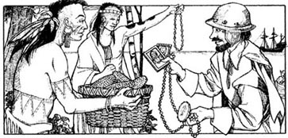
1607年1月，三艘船驶离英国，一路航行来到了美洲。这些船上共有一百五十人，他们想在西半球找到一块新大陆——在一个令人兴奋的全新国度安家落户。
在大海上飘泊了四个月后，船队终于在1607年4月26日抵达弗吉尼亚。在海上颠簸了漫长的四个月后，人们疲惫不堪、饥病交加。而弗吉尼亚是如此美丽迷人，湛蓝的天空下，到处都可以看到河流、鲜花，还有长满高大树木的森林。这些英国人高兴极了。
然而弗吉尼亚的阿尔冈昆印第安人可高兴不起来。他们害怕英国人和他们的船只。“这是我们的家园，”他们说，“我们可不想让这些白人待在这儿。我们必须与他们战斗。”
但也有一些印第安人却说：“不，等一下。这些人蛮有趣的。我们来跟他们交朋友，了解一下他们。”于是印第安人试着去跟英国人交谈，还给他们食物吃。英国人也给印第安人一些诸如小刀、图画和珠子之类的东西作为回报。
英国人开始建造一座小镇。他们称之为“詹姆斯敦”，因为当时英格兰的国王就叫詹姆斯。他们把河也命名为“詹姆斯河”。
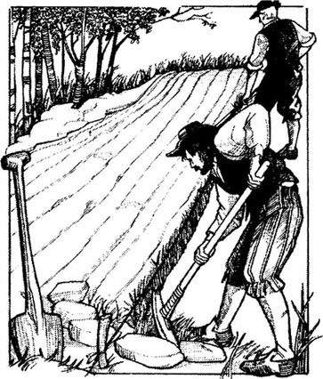
这群英国人的领导者是克里斯托弗·纽波特、爱德华·温菲尔德和约翰·史密斯。他们想更多地了解弗吉尼亚，于是史密斯和纽波特便率二十个人乘一艘小船逆流而上。
温菲尔德带着其他人留在詹姆斯敦。他们开始建造房屋，在小镇外修建花园，开垦田地。
“田地比房屋更重要，”温菲尔德说，“我们必须加快工作速度，因为现在都快到夏季了，我们必须为过冬准备谷物和蔬菜。”
但这并非易事。天气炎热，而且经历了海上四个月的颠簸后，人们都疲惫不堪。其中一些人干活儿很卖力，但还有很多人却坐在太阳底下，无所事事。印第安人在旁边观望着，等待着。
史密斯和纽波特沿河逆流而上行驶了一百公里。他们拜访了印第安人的村落，与很多印第安人交谈。有些印第安人对他们很友好，但也有一些人则不是这样。当史密斯和纽波特回到詹姆斯敦时，温菲尔德非常高兴。
“我很为你们担心，”他说，“你们竟然没死！”
“没有，当然没有了，”史密斯说，“出什么事了？”
“是印第安人，”温菲尔德说，“他们想要杀死我们。就在昨天，他们差点儿杀了我！”
“是吗？那你当时做什么了吗？”史密斯问道，“我们的人有枪，而印第安人是很害怕枪的。”
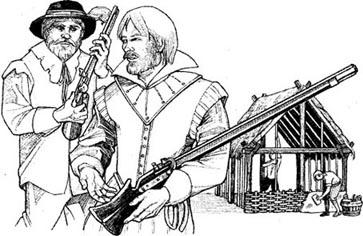
“可是有好几百个印第安人，”温菲尔德说，“再说……我们还没准备好。我们的枪还在船上呢。”
“为什么？”史密斯生气地问道，“我们的人必须时刻准备着，必须随身带枪。印第安人要杀你们是因为他们一点儿都不怕你们。”
“是呀，可是——我们必须要对他们友好。”温菲尔德说道。
“我们可以很友好，但我们首先得小心谨慎，”史密斯说，“我们必须围绕小镇建造坚固的城墙，把船上的大炮架在墙上。这样印第安人就别想杀我们了。”
在接下来的一个月里，每个人都很努力地干活。他们在小镇四周建起了围墙，并把大炮从船上运了过来。但是由于害怕印第安人，人们不敢在田地里劳作。而且天气也越来越炎热了。
6月，纽波特跟随两艘船回了英国。有一百零五人留在了詹姆斯敦。他们的食物极度匮乏。从英国带来的谷物现在已经变质，而田里的新谷物还未长成。河水的水质也很差，很快，许多人都发起了高烧。那年夏天死了四十六个人。
有些人想离开詹姆斯敦，坐船回家，但史密斯制止了他们。“我们来这儿为的是努力工作，建设一座新的城镇，”他说，“可是首先，我们必须找到食物。天上有鸟，河里有鱼，森林中有动物——我们要捕食它们。我们还要从印第安人那里拿到谷物。我能办到。”
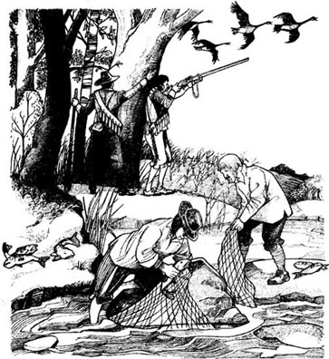
史密斯并不害怕印第安人，但他一直都很小心，随时带着枪。大多数印第安人很怕史密斯，但也很喜欢他。史密斯十分友好，也非常热爱印第安人美丽的土地。史密斯还学习印第安人的语言，因为他想和印第安人交谈并了解他们。他经常会送给印第安人一些从英国带来的小礼物，印第安人也会送给他食物。
然而当冬天来临之际，詹姆斯敦只有五十个人还活着。他们倒是存有一些食物，但还远远不够。弗吉尼亚的冬天漫长而寒冷，五十个人需要很多的食物。
12月，史密斯带着九个人乘船沿着河逆流而上。两个友好的印第安人与他们同行。天气非常寒冷，英国人饥肠辘辘。但史密斯却开心而兴奋。
“我要为圣诞节寻找食物，”他对詹姆斯敦的人说，“在这儿等着我吧，你们要努力干活！这是一个非常美丽的地区，我们就准备留在这里了！”
2 John Smith and Pocahontas
2
John Smith and Pocahontas
There were a lot of Indian villages in Virginia, and every village had its Chief. But there was only one King. That was Powhatan, and he was the King of all the Algonquin Indians.
'Tell me about these white men,' Powhatan said to his brother, Opekankanu. 'They are living in my country, and killing my people. I want to see one of them.'
Powhatan's daughter, Pocahontas, heard this. She was thirteen years old. 'What are white men, father?' she asked. 'Are they white because they are ill?'
Powhatan smiled. 'No, little Pocahontas, they aren't ill,' he said. 'They are a new people from over the sea. Perhaps we can see and talk to a white man soon. My brother is going to find one for us.'
The next day Opekankanu went into the forest with two hundred men. They found John Smith's nine men next to their boat by the river. Smith's men were afraid and got out their guns. But Opekankanu's men killed two of them, and the other seven ran away.
John Smith was in the forest with the two Indians. When they heard the noise, they ran back to the boat — and saw two hundred men, with bows and arrows. Then an arrow hit Smith's leg. He quickly took out his gun, and put a friendly Indian in front of his body.
'What do you want?' he asked. 'Don't come near me!'
'King Powhatan wants to see you,' said Opekankanu. 'Give me your gun.'
'No,' Smith said at first. But there were two hundred Indians, and he was one man. So he gave them his gun, and went with Opekankanu to Werowocomoco, the village of King Powhatan.
In the village, everyone came out to see the Englishman. Pocahontas looked at Smith carefully. He was very interesting. He was not very tall, and he had hair on his face. Indian men had no hair on their faces. And his eyes — his eyes were blue! All the men in her village had brown eyes. She looked at Smith's blue eyes for a long time. They were beautiful, the colour of the sky.
Smith smiled at the little girl, and closed one of his eyes for a second. Pocahontas laughed, and then she smiled back at him.
'Why are you in my country, white man?' Powhatan asked. 'Where do you come from? Who is your King?'
Smith told him about England, and King James, and Jamestown. It wasn't easy, because he didn't understand Powhatan's language very well, and Powhatan didn't always understand him. 'We want to live here, and be your friends, Powhatan,' he said. 'But this winter the people of Jamestown are hungry, so we need food.'
Opekankanu was angry. 'These Englishmen cannot live here,' he said to his brother. 'They are taking our land and killing our people with their guns. They want King James of England to be king here, too. They call their town King James's town, and they call our beautiful river King James's river! But what about us? This is our country! We live here, and our fathers and grandfathers lived here before us. We don't want the English, or their King James. We must kill them all now!'
'Perhaps,' Powhatan said. 'But let's think first. The English have guns, so we need guns too. I must think carefully about this. Pocahontas, come with me.'
They walked into the forest, and Powhatan asked his daughter, 'What do you think about this Englishman, little Pocahontas?'
'Oh, father, I like him. He has wonderful blue eyes — the colour of the sky.'
'My brother wants to kill him, but I want to know more about these Englishmen first — and you can help me. I'm going to give him to you, little Pocahontas.'
'Give him to me, father?'
'Yes. Listen carefully, now. You must do this...'
They went back to the village. 'Are we going to kill this white man now, Powhatan?' Opekankanu asked.
'Yes,' Powhatan said. 'Bring him here.'
They put John Smith's head on a stone, in front of Powhatan's feet. Then Opekankanu took a big stick, and walked to the stone. Pocahontas looked at her father. He moved his head a little, but did not look at her. Now Opekankanu was next to the stone. John Smith closed his eyes, and waited to die.
Suddenly, he felt warm arms on his face and head. He opened his eyes and saw the face of the young girl, with her beautiful dark eyes.
'No, Opekankanu!' she cried. 'No! I am the King's daughter, and I say no!' She looked at her father. 'Father — don't kill this man — please! Give him to me!'
At first Powhatan said nothing. Then, slowly, he smiled. ' Very well, Pocahontas,' he said. 'You are only thirteen years old, but this white man is not very big. He is a boy with hair on his face. You can have him.'
Angrily, Opekankanu put his stick down.
Pocahontas smiled. 'Come with me, white man,' she said to him. 'You are my Englishman now. Come!'
chief n. a leader or ruler of a people 酋长；族长
king n. the male ruler of an independent region（印第安人部落等的）首领
bow n. a weapon used for shooting arrows 弓
arrow n. a weapon like a thin straight stick with a point at one end 箭
hit v. direct a blow at with one's hand or a tool or weapon 击中
take v. capture or gain possession of by force or military means 夺取
wonderful adj. extremely good, pleasant, or remarkable 奇妙的
stick n. a long, thin object or piece of something 棍；棒
move v. change or cause to change position 动
约翰·史密斯与波卡洪塔斯
2．约翰·史密斯与波卡洪塔斯
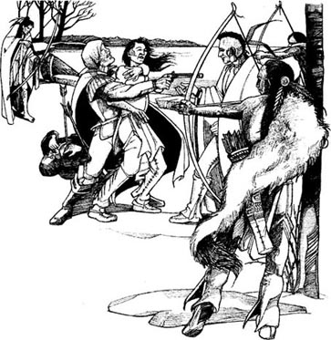
弗吉尼亚有很多印第安人的村落，每一座村子都有自己的酋长。但弗吉尼亚的印第安人只有一位首领，他就是波瓦坦，他是所有阿尔冈昆印第安人的首领。
“给我讲讲这些白人吧，”波瓦坦对自己的兄弟奥皮坎卡努说，“他们现在居住在我的领地里，残害着我的人民。我想见见他们中的一员。”
波瓦坦的女儿波卡洪塔斯听到了他们的话。她当时十三岁。“白人是什么，父亲？”她问道，“他们是因为生病所以皮肤是白的吗？”
波瓦坦笑了。“不是的，小波卡洪塔斯，他们并没有生病，”他说，“他们是来自海外的一个新的民族。或许咱们很快就能见到一个白人，并和他交谈了。我的兄弟会给咱们找到这样一个人。”
第二天，奥皮坎卡努带着两百个人潜入森林。他们发现了河边小船旁约翰·史密斯的那九个手下。史密斯的手下都大惊失色，纷纷掏出了枪。不过奥皮坎卡努的手下还是杀死了他们中的两个人，剩下的七个人四散逃跑。
约翰·史密斯和随行的两个印第安人当时正在森林里。当他们听到响动后，马上跑回船边，看到两百个手持弓箭的人。紧接着，一支箭射中了史密斯的腿。他立刻掏出自己的枪，并把随行的一名印第安友人挟持在身前。
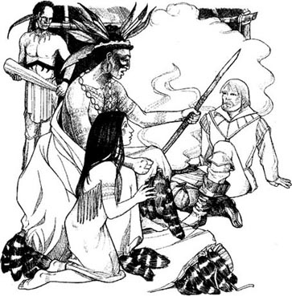
“你们想干什么？”他问，“别靠近我！”
“波瓦坦首领想见见你，”奥皮坎卡努说，“把你的枪给我。”
“不。”史密斯起初拒绝了。但是对方有两百名印第安人，而他只有一个人。于是，他把自己的枪交给对方，并跟奥皮坎卡努一起来到了威尔沃科莫科村——波瓦坦首领所在的村子。
村子里，人人都出来争相观看这个英国人。波卡洪塔斯仔细地端详着史密斯。他长得真有趣！他个子不算高，脸上还长着毛发。印第安男人的脸上是没有毛发的。还有就是史密斯的眼睛，他的双眼竟然是蓝色的！村子里的所有男人都长着棕色的眼睛。她久久地凝望着史密斯那双蓝蓝的眼睛。他的双眸很美，是天空的颜色。
史密斯冲着这个小女孩儿笑了笑，一只眼睛很快地眨了一眨。波卡洪塔斯笑了起来，然后笑咪咪地看着史密斯。
“你为什么会在我的领土，白人？”波瓦坦问道，“你来自何方？谁是你的首领？”
史密斯告诉他有关英国的事情，还有詹姆斯国王和詹姆斯敦。这可并非易事，因为他不太懂波瓦坦的语言，而且波瓦坦也不是总能听懂史密斯在说些什么。“我们想生活在这里，并且成为你们的朋友，波瓦坦，”他说，“可是今年冬天，住在詹姆斯敦的人非常饥饿，所以我们需要食物。”
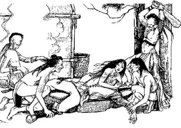
奥皮坎卡努很生气。“这些英国人不能住在这儿，”他对自己的兄弟说，“他们抢走了我们的土地，枪杀了我们的人民。他们想让英国的詹姆斯国王也成为这里的国王。他们管自己待的城镇叫詹姆斯国王的城镇，而且还把我们美丽的河流叫詹姆斯国王的河！那我们算什么？这可是我们的领土！我们生活在这里，而且我们的祖祖辈辈很久前就居住在这里了。我们不要什么英国人，也不要什么詹姆斯国王。我们必须现在就把他们全部都杀死！”
“或许吧，”波瓦坦说，“但我们得先仔细想想。英国人有枪，我们也需要枪。我必须好好想想这件事。波卡洪塔斯，跟我来。”
他们走进了森林，波瓦坦问自己的女儿：“你觉得这个英国人怎么样，小波卡洪塔斯？”
“噢，父亲，我喜欢他。他有一双奇妙的蓝眼睛——那是天空的颜色。”
“我的兄弟想杀了他，但我想先多了解一下这些英国人的事情——你能够帮助我。我会把他交给你，小波卡洪塔斯。”
“把他交给我，父亲？”
“是的。现在仔细听好。你必须这么这么做……”
他们回到村子里。“我们打算杀死这个白人吗，波瓦坦？”奥皮坎卡努问道。
“是的，”波瓦坦回答说，“把他带到这儿来。”
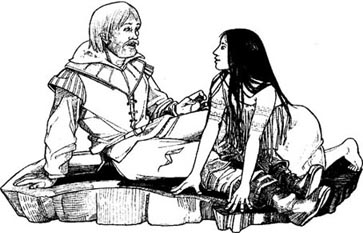
他们把约翰·史密斯的头按在波瓦坦脚前的一块石头上。接着奥皮坎卡努拿起一根大棒，走向那块石头。波卡洪塔斯望着父亲。父亲微微点了一下头，但没有看她。此时此刻奥皮坎卡努已经站在石头旁。约翰·史密斯闭上眼睛，等待死亡的来临。
突然，他感到有一双温暖的手臂护住了自己的脸和头。他睁开眼睛，看到了那位年轻女孩儿的面孔，还有她那双美丽的黑眼睛。
“不要，奥皮坎卡努！”她喊道，“不要！我是首领的女儿，我说不行！”她看着父亲。“父亲，不要杀这个人，求求你了！把他赐给我吧！”
起初波瓦坦什么都没说。然后，他慢慢地笑了。“很好，波卡洪塔斯，”他说，“你只有十三岁，不过这个白人个头也不大。他不过是个脸上长着毛发的男孩儿。你可以得到他。”
奥皮坎卡努生气地放下了手里的大棒。
波卡洪塔斯微笑着。“跟我来，白人，”她对他说道，“你现在是我的英国人了。来呀！”
3 A friend for the English
3
A friend for the English
John Smith stayed with Pocahontas for some days. She learnt some English, and he learnt more of her language. Soon they were good friends.
But Powhatan's men watched Smith carefully, and he could not leave the village. Then one day Powhatan said, 'You can go home to Jamestown, John Smith. But you must give me two of your big guns.'
John Smith did not like this, but he could not say no. So he went back to Jamestown, and Pocahontas, Opekankanu, and some Indians went with him.
In Jamestown Wingfield was not happy. 'We can't give our big guns to the Indians!' he said. 'Then they can kill us, with our guns!'
'It's all right,' said Smith. 'Wait.'
He took Opekankanu and his men to the guns on the town walls. 'Now watch,' he said. He put some gunpowder and some stones in the gun. 'Put your hands over your ears,' he said, 'and look at that tree.'
BANG! Pocahontas closed her eyes. Then she opened them, and looked at the tree. It wasn't there!
'What happened?' she asked. 'Where's the tree? '
'I killed it with this gun,' Smith said. He looked at Opekankanu. 'This gun can kill ten men, Opekankanu. Remember that. So, take your two guns.
But the guns were very big, and of course, the Indians could not move them.
'Look,' said Smith. 'You can't carry these guns through the forest. But I can give you some gunpowder for Powhatan. Here, take it. Be very careful with it.'
'Thank you,' Opekankanu said. 'But one day, we want these big guns too. They are very important for us.'
'Perhaps,' said Smith. 'But we want to be your friends, and friends are better than guns.'
* * *
That winter, Pocahontas came to Jamestown every week with food for the Englishmen. She learnt many interesting things in Jamestown.
'Look at this, Pocahontas,' John Smith said one day. He had a compass in his hand.
'What is it?' Pocahontas asked. She tried to put her finger on the arrow in the compass, but she couldn't.
'It's a compass. The arrow always points to the north,' Smith said. 'Where is the north? Do you know?'
'Of course I know. All my people know that. '
'Well, look — the arrow in the compass knows it too!'
'Why can't I put my finger on it?'
Smith smiled. 'Because of the glass. You can see through glass, but you can't put your finger through it.'
'Yes,' she said slowly. 'But — what is a compass for?'
'It helps us in our ships when we can't see the sky,' he said. 'Which way do we go? Where is the north? The compass tells us all that.'
Pocahontas was interested in everything. She loved to talk to John Smith, and she learnt many things about England and the English.
* * *
In March and April 1608, two more ships came to Jamestown. Powhatan asked Pocahontas about them.
'How many Englishmen are there now?' he asked.
'There were thirty-eight before the ships came, father. But now there are about a hundred and fifty.'
'It's spring now. They must sow corn and vegetables in their fields. Are they doing that?'
'Yes, father. But they aren't very good at it. This is a new country for them. They don't understand it.'
'But they must have corn!' Powhatan was angry. 'They need food for the winter. We can't give them our corn every year! And we kill animals, birds, and fish for our food — the English must learn to do that too!'
'They are learning, father,' Pocahontas said. 'But most of these men come from towns in England. They don't know about these things.'
'Well, they live here now, so they must learn, 'said Powhatan. 'Or they must give me guns. We have a lot of food in our village, but we need guns. I can give the Englishmen food, but they must give me guns first. Tell that to your English friends, Pocahontas!'
leave v. go away from 离开
gunpowder n. an explosive substance in the form of powder 火药
compass n. an instrument that shows directions 指南针
point v. direct or aim something 指向
英国人的朋友
3．英国人的朋友
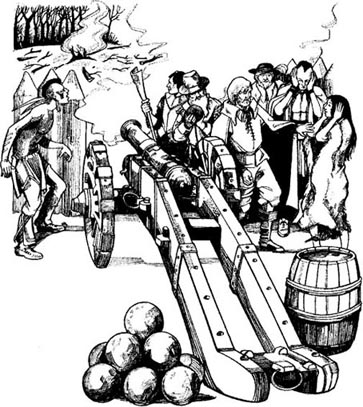
约翰·史密斯与波卡洪塔斯在一起待了一些日子。她学会了一些英语，而他也学会了更多的印第安语。他们很快就成了好朋友。
但是波瓦坦的手下把史密斯看得很紧，他无法离开村子。一天，波瓦坦说：“约翰·史密斯，你可以回到詹姆斯敦。但你必须送给我两门你们的大炮。”
约翰·史密斯并不愿意这样做，但他别无选择。于是波卡洪塔斯、奥皮坎卡努和一些印第安人跟他一同回到了詹姆斯敦。
到了詹姆斯敦后，温菲尔德十分不悦。“我们不能把大炮送给印第安人！”他说，“那样的话，他们就能用我们的枪炮杀我们了！”
“不会有事的，”史密斯说，“等着瞧吧。”
他带着奥皮坎卡努和随同的印第安人来到了架在城墙上的大炮前。“现在看好了，”他说。他把一些火药和石头塞进了大炮，然后说：“用手掩住耳朵，看着那棵树。”
砰！波卡洪塔斯闭上了眼睛。然后她睁开双眼，看那棵树。树却不见了！
“发生什么事了？”她问道，“树到哪儿去了？”
“我用这门大炮把它给消灭了，”史密斯说。他望着奥皮坎卡努。“这门大炮能杀死十个人，奥皮坎卡努。请记好。好吧，带走你的两门大炮吧。”
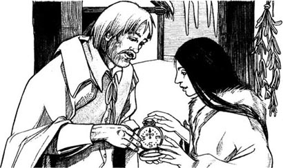
但是大炮太大了，印第安人当然没办法挪动它们。
“看，”史密斯说，“你们没法带着这些大炮穿越森林。但我可以让你们带给波瓦坦一些火药。在这儿，拿去吧。可要千万小心这个东西。”
“谢谢，”奥皮坎卡努说，“但总有一天，我们也会需要这些大炮。它们对我们来说非常重要。”
“或许吧，”史密斯说，“但我们希望成为你们的朋友，朋友要比枪炮好多了。”
* * *
那年冬天，波卡洪塔斯每星期都来詹姆斯敦，给英国人带来食物。她在詹姆斯敦了解到很多有趣的事物。
一天，约翰·史密斯说：“瞧瞧这个，波卡洪塔斯。”他的手里拿着一个指南针。
“这是什么？”波卡洪塔斯问道。她想把手指放到指南针的箭头上，却放不上去。
“这是指南针。它的箭头总是指向北方，”史密斯说，“哪里是北方？你认得出吗？”
“我当然认得出了。我们这儿所有的人都认得出。”
“好吧，看——指南针里的箭头也认得出北方！”
“为什么我不能把手指放到箭头上面？”
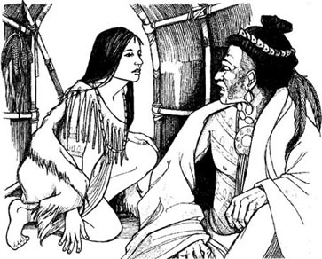
史密斯笑了。“因为有玻璃。你可以透过玻璃看到里面，但你的手指却不能透过玻璃触摸到里面。”
“的确是这样，”她慢慢地说道，“不过——指南针是用来做什么的？”
“当我们在船上看不清天空的时候，它就起作用了，”他说，“我们应该走哪一条路？哪儿是北方？指南针会告诉我们这一切。”
波卡洪塔斯对一切都充满了兴趣。她很喜欢与约翰·史密斯交谈，她还了解到很多跟英国和英国人有关的事情。
* * *
1608年的3月和4月，又有两艘船来到了詹姆斯敦。波瓦坦向波卡洪塔斯问起此事。
“现在有多少个英国人了？”他问道。
“在这些船到来之前有三十八个人，父亲。但目前大约已有一百五十人了。”
“现在是春天。他们一定得在地里种上谷物和蔬菜。他们在种地吗？”
“是的，父亲。但他们不太会种。对他们来说，这是一个新的地区。他们还不太了解这里怎么种地。”
“可他们必须得有谷物呀！”波瓦坦很生气。“他们需要过冬的食物。我们总不能每年都把自己的谷物送给他们吧！我们还靠打猎、射鸟、捕鱼来获取食物——英国人也必须要学会这些才行！”
“他们是在学习，父亲，”波卡洪塔斯说，“但他们中的大多数人都来自英国的城镇，对这些事还一窍不通呢。”
“可是，现在他们生活在这里，因此他们必须要学会，”波瓦坦说，“否则他们就得送给我枪炮。我们的村子里有很多食物，但我们需要枪炮。我可以送给英国人食物，但他们必须先给我枪炮才行。去把这些都告诉你的英国朋友，波卡洪塔斯！”
4 A wife for John Smith
4
A wife for John Smith
But the English didn't want to give Powhatan any guns. 'Oh no, Pocahontas,' John Smith said.' Your father has thousands of men, but we have only a hundred and fifty. We can't give him guns.'
Later, some of Powhatan's men tried to take guns from the English. Smith was very angry. He locked the men in a little room in Jamestown for a week. Then he talked to Pocahontas about them.
'I'm very angry with these men, Pocahontas,' he said. 'But I'm not going to kill them, because your father didn't kill me in Werowocomoco. I'm going to give them to you. Take them home, Pocahontas.'
Pocahontas liked the English, and she often visited Jamestown. John Smith liked to teach her new things.
'The sun, Pocahontas,' he said one evening, 'is a red ball in the sky. This world is a big round ball, too. Thirty years ago, an Englishman called Francis Drake sailed round the world in a ship.'
Pocahontas laughed. 'But that's not true! Of course the world isn't a ball! Why does the sea stay on it, then?'
Smith smiled. 'Oh, I can tell you. Listen...'
He talked well, so it was easy to understand him. Pocahontas listened, and watched his beautiful blue eyes. She was fourteen years old, and for her, John Smith was the most exciting man in the world.
'Do you have a wife, John Smith?' she asked one day.
'No,' he said slowly. 'Why do you ask?'
'Oh, because one day I must have a husband, and...' She did not finish, but John Smith understood.
'Pocahontas,' he said carefully, 'you are only fourteen years old, and I'm twenty-eight. And the daughter of the King must marry somebody important.'
'You are an important man in Jamestown,' she said quickly. 'And my people and your people must learn to be friends. A husband and wife can...'
'Stop.' He put his finger on her mouth. 'Pocahontas, I like you very much, but I'm not the right husband for you, and...I don't know a lot about women.'
'I can teach you about that!' she said.
He looked at her in surprise, and laughed. She was angry when he laughed.
'I'm nearly fifteen. In my village a girl can have a husband when she is fifteen! Why are you laughing?'
'I'm sorry,' he said. 'You are a beautiful, interesting girl, Pocahontas. But you are only a child!'
'I'm not a child! You're afraid of me, because I'm a King's daughter, and I want you for my husband.'
Pocahontas was angry and unhappy. She went away, back to her father's village, and she didn't visit John Smith again for two months. But she thought about him every day. There was only one man in the world for Pocahontas, and that was John Smith.
And in Jamestown, perhaps John Smith thought about Pocahontas, too.
lock v. fasten or be fastened with a lock 把……锁起来；锁上
think about use one's mind to consider (something) 想；思念
萌生爱意
4．萌生爱意
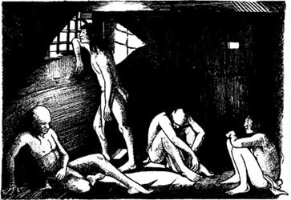
但英国人并不愿意把枪炮送给波瓦坦。“哦，不，波卡洪塔斯，”约翰·史密斯说，“你父亲手下有好几千人，而我们只有一百五十个人。我们不能把枪炮给他。”
随后，波瓦坦手下的一些人企图从英国人手里把枪炮夺过来。史密斯非常生气。他把这些印第安人锁在詹姆斯敦的一个小屋里，关了一星期。之后他跟波卡洪塔斯谈起了这件事。
“这些人令我很生气，波卡洪塔斯，”他说，“但我并不打算杀他们，因为在威尔沃科莫科村的时候，你的父亲没有杀我。我准备把这些人交给你。带他们回家吧，波卡洪塔斯。”
波卡洪塔斯很喜欢英国人，她经常来詹姆斯敦。约翰·史密斯也很喜欢教给她新的东西。
“波卡洪塔斯，”一天晚上史密斯对她说，“太阳是天空中一个火红的球。这个世界也是一个大圆球。三十年前，一位名叫弗朗西斯·德雷克的英国人乘着一艘船环游了世界。”
波卡洪塔斯笑着说：“可这并不是真的吧！世界肯定不是一个圆球！要真是这样，大海为什么还能待在地上面？”
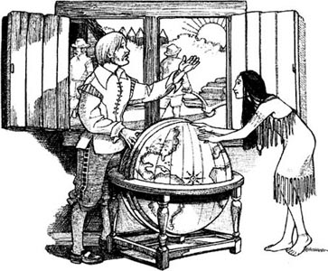
史密斯微笑道：“噢，我来告诉你。听着……”
他讲解得非常好，所以很容易听懂。波卡洪塔斯一边听着一边望着他那双美丽的蓝眼睛。她十四岁了，对她来说，约翰·史密斯是世上最令人兴奋的男人。
“你有妻子吗，约翰·史密斯？”一天，她问道。
“没有，”他慢慢地说，“你为什么问这个？”
“噢，因为总有一天我得有个丈夫，而且……”她没有说完，但约翰·史密斯已经明白了。
“波卡洪塔斯，”他小心翼翼地说道，“你只有十四岁，而我已经二十八岁了。再说首领的女儿一定得嫁给重要人物。”
“你在詹姆斯敦就是位重要人物，”她马上答道，“而且我的人民和你的人民都必须学会成为朋友。一对夫妻能够……”
“不要再往下说了，”他把手指放在她的嘴上，“波卡洪塔斯，我非常喜欢你，但我并不适合做你的丈夫，而且……我对女人的了解也不多。”
“我可以教你去了解呀！”她说。
他吃惊地望着她，笑了起来。波卡洪塔斯看到他笑很生气。
“我都快十五岁了。在我的村子里，女孩子十五岁的时候就可以有丈夫了！你为什么要笑呢？”
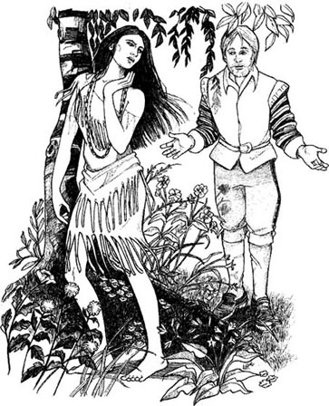
“对不起，”他说道，“你是个美丽而有趣的姑娘，波卡洪塔斯。但你还只是个孩子！”
“我不是孩子了！你害怕我，因为我是首领的女儿，而且我想让你做我的丈夫。”
波卡洪塔斯又气又恼。她走了，回到了父亲的村子，有两个月都没再去找约翰·史密斯。但她每天都思念着他。在这个世界上，波卡洪塔斯心里只有一个男人，他就是约翰·史密斯。
而在詹姆斯敦，也许约翰·史密斯也正在想着波卡洪塔斯呢。
5 Where is John Smith?
5
Where is John Smith?
In the winter of 1608 the English in Jamestown were hungry again. So John Smith went to Werowocomoco and asked Powhatan for corn. He took many beautiful glass beads with him, because the Indians loved these things. But Powhatan wanted more than beads.
'You can have corn,' he said, 'but you must build one of your big English houses for me — with windows of glass. And you must give me some guns.'
'A house — yes,' said Smith. 'Tomorrow my men can bring things from Jamestown and begin to build a house for you. But guns — no. Friends do not need guns.'
Powhatan smiled, but he was angry, very angry. 'Yes, we are friends,' he said. 'Tonight you must stay here and eat with us. Tomorrow you can have your corn.'
That night Pocahontas came to John Smith. She was afraid. 'My father is angry,' she said. 'He wants to kill you, and all your men. You must be careful!'
John Smith took her hands. 'What a good friend you are, Pocahontas!' he said. 'How can I thank you?'
Pocahontas looked into his blue eyes. 'You are my King,' she said quietly. 'My King — now, and always.'
So Smith and his men carried their guns all the time and they watched very carefully. The next morning Opekankanu and his women came with the corn.
'There is your corn,' Opekankanu said. 'Now, give us your guns!' He smiled. 'Look behind you!'
Smith looked. And seven hundred Indians came out of the forest, with bows and arrows.
How can ten men fight seven hundred? In a second, John Smith had his hand in Opekankanu's hair, and his gun in Opekankanu's face.
'My gun can kill you,' he said angrily, 'before an arrow can get to me.' He looked at Opekankanu's men. 'Do you want Opekankanu to die?' he called.
The Indians were afraid of John Smith. To them, he was a King, and it is not easy to kill a King. They put down their bows and arrows, and went away into the forest. Opekankanu, too, was afraid. His women put the corn in Smith's boat, and Smith and his men went back down the river to Jamestown.
Powhatan and Opekankanu were angry. 'We don't want these Englishmen in our country,' Powhatan said. 'We must kill them — kill them all!'
'No, father!' said Pocahontas. 'We must learn to be friends with the English. John Smith says—'
'Be quiet!' Powhatan said. 'John Smith is our enemy. Stay away from him! Do you understand?'
'But you gave him to me, father. Do you remember? I loved his blue eyes then, and I love them now. I cannot stay away from him.'
Pocahontas did visit John Smith after that, but not very often. It wasn't easy for her. There was often fighting between the English and the Indians now, and dead men do not make friends.
More ships and more men came from England — and more guns. Jamestown was now a town of five hundred people — five hundred hungry people. The English wanted the Indians' corn, and the Indians wanted the Englishmen's guns.
One day, in October 1609, Pocahontas went to Jamestown, but she could not find John Smith.
'Where is he?' she asked some Englishmen.
'Smith? He left Jamestown a month ago,' one man said. 'He had a bad accident with some gunpowder. He was very ill. So he went home to England.'
'Ill?' Pocahontas said. 'John Smith is ill?'
'Yes,' the man said. 'It was a very bad accident. And six weeks on a ship... perhaps he's dead now.'
'Did — did he leave a letter for me?' Pocahontas asked.
The man laughed. 'A letter for you, little girl? But you can't read! Why? Is it important?'
'No,' she said. 'It's not important.' But of course it was.
She went away into the forest and cried for a long time. Where was John Smith, her Englishman with blue eyes, the colour of the sky?
all the time very frequently or regularly 始终
watch v. to be very careful 留意；当心
enemy n. a person who is actively opposed or hostile to someone or something 敌人
accident n. an unfortunate incident that happens unexpectedly and unintentionally 意外事件；事故
约翰·史密斯失踪了？
5．约翰·史密斯失踪了？
1608年的冬天，詹姆斯敦的英国人又遭遇了饥荒。于是约翰·史密斯来到威尔沃科莫科村，向波瓦坦要谷物。他带了很多漂亮的玻璃珠子，因为印第安人喜欢这些东西。但波瓦坦想要的不仅于此。
“你可以拿走谷物，”他说，“但你必须为我建造一座你们英国人那样的大房子——有玻璃窗户的那种。你还必须得给我一些枪炮。”
“一幢房子——好吧，”史密斯说道，“明天我的人会从詹姆斯敦带东西过来，开始为你建造一栋房子。但至于枪炮——那不行。朋友之间是不需要什么枪炮的。”
波瓦坦笑了一下，但实际上他生气了，非常非常生气。“是啊，我们是朋友，”他说，“你今晚必须待在这里，和我们一同用餐。明天就可以拿到谷物了。”
那天晚上，波卡洪塔斯来找约翰·史密斯。她非常害怕。“我父亲生气了。”她说，“他想杀了你，以及你手下所有的人。你千万要小心啊！”
约翰·史密斯握住了她的手。“你是一个多么好的朋友啊，波卡洪塔斯！”他说，“我该如何感谢你呢？”
波卡洪塔斯凝望着他那双蓝眼睛。“你就是我的首领，”她低声说道，“我的首领——现在是，永远都是。”
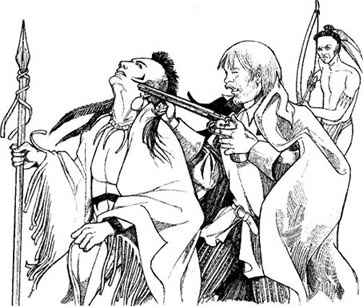
于是史密斯和他的手下始终枪不离身，非常小心地戒备着。第二天早上，奥皮坎卡努和他的女人们带来了谷物。
“这是你们的谷物，”奥皮坎卡努说。“现在，把你们的枪交给我们！”他笑着说，“看看你们的背后！”
史密斯看了一下。有大约七百名印第安人从森林里冒了出来，手里都拿着弓箭。
十个人怎么打得过七百个人？突然，约翰·史密斯用手抓住了奥皮坎卡努的头发，同时把枪顶在奥皮坎卡努的脸上。
“我的枪能杀死你，”他愤怒地说道，“在箭射中我之前。”他看着奥皮坎卡努的手下。“你们想让奥皮坎卡努死吗？”他喊道。
印第安人很害怕约翰·史密斯。对他们来说，他就像是首领，而杀死首领并非易事。他们放下弓箭，撤回了森林。奥皮坎卡努也很害怕。他的女人们把谷物放进了史密斯的船里，史密斯和他的手下顺河而下回到了詹姆斯敦。
波瓦坦和奥皮坎卡努都暴跳如雷。“我们不想再让这些英国人待在我们的领土上，”波瓦坦说，“我们必须杀了他们——把他们全都杀了！”
“不，父亲！”波卡洪塔斯说道，“我们必须学会和英国人做朋友。约翰·史密斯说——”
“住嘴！”波瓦坦说，“约翰·史密斯是我们的敌人。离他远点儿！你明白吗？”
“但你把他交给了我，父亲。你还记得吗？我那时很喜欢他的那双蓝眼睛，现在我也喜欢它们。我不能离开他。”
此后波卡洪塔斯的确去看过约翰·史密斯，但并不是很频繁。因为这对她来说并不容易。现在英国人和印第安人之间经常发生冲突，发生伤亡后双方就没法再做朋友了。
从英国来了更多的船和人，还有更多的枪炮。詹姆斯敦现在是一个拥有五百个人——五百个饥饿的人——的城镇。英国人想得到印第安人的谷物，而印第安人则想要英国人的枪炮。
1609年l0月的一天，波卡洪塔斯来到了詹姆斯敦，但却找不到约翰·史密斯。
“他在哪儿？”她问一些英国人。
“史密斯吗？一个月前他就离开詹姆斯敦了，”一个人说道，“火药走火让他伤得不轻。他病得很厉害，所以回英国老家去了。”
“病了？”波卡洪塔斯问道，“约翰·史密斯病了？”
“是的，”那个人说道，“那是一次很严重的事故。而且他还要在船上待六个星期……也许他现在已经死了。”
“那——那他有没有留给我一封信？”波卡洪塔斯问道。
那个人笑了：“留给你信，小姑娘？可你不识字啊！为什么问这个？很重要吗？”
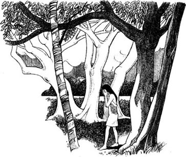
“不，”她说，“并不重要。”但这当然很重要。
她走进森林，哭了很久。约翰·史密斯在哪儿？她那有着一双天蓝色眼睛的英国人在哪儿呢？
6 A husband for Pocahontas
6
A husband for Pocahontas
For four years after that, things were very bad. Sometimes Pocahontas tried to help the English. But to Powhatan and Opekankanu, the English were enemies, and they wanted to kill them all.
Powhatan gave the English no more corn. His men came at night to Jamestown, and took guns and other things. When they found Englishmen in the forest or by the river, they killed them and took their guns. And so Powhatan now had many guns in Werowocomoco.
The new leaders of Jamestown were very unhappy about this. 'How can we stop Powhatan?' they said. 'We must get those guns back from him.'
'We need to take a hostage,' said a man called Samuel Argall. 'One of the Chiefs, or somebody important from Powhatan's family. Then we can talk to Powhatan. We can give him back the hostage when he gives us the guns — but not before.'
'Powhatan has a daughter, Pocahontas,' said an older man. 'He loves her very much, they say...'
* * *
In 1613 Pocahontas was nineteen. She lived now with her father's friend, Iapassus, and his wife. Iapassus was friendly with the English, and so it was easy for Samuel Argall. He came to Iapassus' village in his ship.
'I have many beautiful things from England in my ship,' he told Iapassus. 'They are all for you — but first, you must give me something. You must bring Pocahontas onto my ship, and leave her here.'
So Iapassus took Pocahontas onto the ship, and Argall locked her in a room. Pocahontas was very angry.
'I'm sorry,' Argall said to her, 'but you must come with me to Jamestown. Your father must stop fighting us, and he must give us back our guns. Then you can go home.'
So Pocahontas went to Jamestown, and stayed there. At first, Powhatan was angry. He wanted his daughter. But then he looked at his guns, and he wanted them more than his daughter.
'We can kill the English with these guns,' he said to Opekankanu. 'Pocahontas likes the English. She can stay in Jamestown — and the guns can stay here.'
* * *
There were many women in Jamestown now, and Pocahontas soon made new friends. The Englishwomen liked her very much. She stayed in their houses, played with their children, and spoke English all the time.
After some months, one of her new friends asked her: 'Are you happy here with us, Pocahontas? Would you like to go home to your pepole?'
'The English are my people now,' said Pocahontas.
'But perhaps one day your father —' said her friend.
'My father,' said Pocahontas, 'likes his guns better than his daughter. They are more important to him. This is my home now, and I am very happy here.'
One of her new friends was a man called John Rolfe. Pocahontas liked him. Rolfe was a tall man, with brown eyes. He liked Pocahontas, too, and visited her nearly every day. He smiled a lot, and often laughed happily.
One day he said: 'Pocahontas, I have something important to say to you. We are good friends, I think, and... well, we can be more than friends. I need a wife, Pocahontas, and — you are the most beautiful woman in Jamestown. And the most interesting woman, too! I love you, Pocahontas, and I want to marry you.'
At first Pocahontas didn't say anything. John Rolfe was a nice man, but a long time ago, she remembered, she wanted to be the wife of a different John. 'But I'm never going to see John Smith again,' she thought. 'He's dead. I must forget about him.'
She smiled at John Rolfe. 'Yes, John,' she said. 'I would very much like to be your wife.'
And so, on the 5th April, 1614, an Indian girl married an Englishman in the church in Jamestown. Pocahontas' father did not come, but Opekankanu was there, with many of her people.
'Your father is happy for you,' Opckankanu told her.
Pocahontas was happy, too. John Rolfe was a good husband, and a year later, they had a little son, Thomas. Pocahontas loved him very much.
hostage n. a person seized or held as security for the fulfillment of a condition 人质
forget v. fail to remember 忘记
波卡洪塔斯之夫
6．波卡洪塔斯之夫
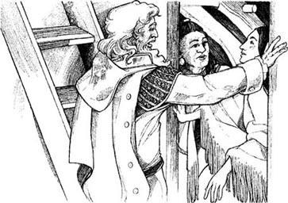
此后的四年里，情况很糟糕。波卡洪塔斯有时会设法帮助英国人。但对波瓦坦和奥皮坎卡努来说，英国人就是敌人，他们要把英国人全都杀死。
波瓦坦没再给过英国人谷物。他的手下趁夜色潜入詹姆斯敦，拿走枪和其他物品。一旦在森林中或是河边发现英国人，他们就会杀掉对方并抢走他们的枪。所以，现在波瓦坦在威尔沃科莫科村有了很多枪。
詹姆斯敦的新领袖们对此非常恼火。“我们怎么才能阻止波瓦坦？”他们说，“我们必须把枪从他那里夺回来。”
“我们需要一名人质，”一个叫塞缪尔·阿高尔的人说，“这个人可以是一名印第安酋长，或是波瓦坦家族的某位重要人物。然后我们就可以跟波瓦坦谈判。如果他把枪还给我们，我们就可以把人质交还给他——但在还枪以前，是不可能还给他们人质的。”
“波瓦坦有一个女儿，叫波卡洪塔斯，”一位年长的人说道，“他非常疼爱她，他们说……”
* * *
1613年，波卡洪塔斯十九岁。她现在和父亲的朋友伊阿帕索斯夫妇住在一起。伊阿帕索斯对英国人很友好，因此塞缪尔·阿高尔很容易施行自己的计划。他乘船来到伊阿帕索斯的村子。
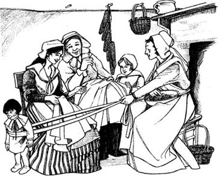
“我的船上有很多从英国带来的漂亮玩意儿，”他对伊阿帕索斯说，“这些都是送给你的——但首先，你得给我一样东西。你必须把波卡洪塔斯带到我的船上来，并把她留在这儿。”
于是伊阿帕索斯把波卡洪塔斯带到船上，接着阿高尔把她锁进了一间屋子里。波卡洪塔斯非常生气。
“很抱歉，”阿高尔对她说，“但你必须得跟我回詹姆斯敦。你父亲必须停止同我们争战，并把枪还给我们。然后你才可以回家。”
于是波卡洪塔斯去了詹姆斯敦，并待在那里。波瓦坦非常生气，他想要回自己的女儿。但当他看到自己的枪时，他觉得比起自己的女儿，他更想要这些枪。
“我们可以用这些枪杀死英国人，”他对奥皮坎卡努说，“波卡洪塔斯既然喜欢英国人，那她可以待在詹姆斯敦——而枪就放在我们这儿吧。”
* * *
现在已经有很多女人住在詹姆斯敦了，波卡洪塔斯很快就交上了新朋友。英国女人们都很喜欢她。波卡洪塔斯待在她们的家里，和她们的孩子一起玩儿，而且一直在讲英语。
几个月后，她的一位新朋友问她：
“你和我们待在这里快乐吗，波卡洪塔斯？你愿意回家，回到你的人民那里去吗？”
“现在英国人就是我的人民。”波卡洪塔斯说道。
“但或许有一天你的父亲——”她的朋友说。
“我的父亲，”波卡洪塔斯说，“喜欢他的枪胜过于喜欢他的女儿。那些枪对他来说更重要。现在这里是我的家，我在这儿非常开心。”
她的新朋友中有一个叫约翰·罗尔夫的人，波卡洪塔斯很喜欢他。罗尔夫个子高高的，有一双棕色的眼睛。他也喜欢波卡洪塔斯，几乎每天都去看她。他总是面带微笑，而且经常发出开心的笑声。
一天，他说：“波卡洪塔斯，我有重要的事要告诉你。我们是好朋友，我想，那个……呃，我们的关系可以不止是朋友。我需要一个妻子，波卡洪塔斯，而且——你是詹姆斯敦最美丽的女人，也是最富情趣的女人！我爱你，波卡洪塔斯，我想娶你为妻。”
起初，波卡洪塔斯没有说话。约翰·罗尔夫是个好人，但她记起在很久以前，自己曾经想要成为另一个约翰的妻子。“但我将再也见不到约翰·史密斯了，”她想，“他死了。我必须忘了他。”
于是她冲约翰·罗尔夫笑了笑。“好的，约翰，”她说，“我很愿意成为你的妻子。”
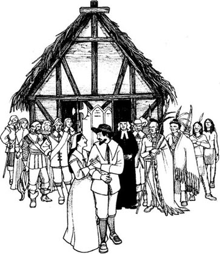
于是，1614年4月5日，在詹姆斯敦的教堂里，一个印第安女孩嫁给了一个英国人。波卡洪塔斯的父亲没有出席，但奥皮坎卡努来了，还有她的很多印第安同胞。
“你父亲为你感到高兴。”奥皮坎卡努告诉她。
波卡洪塔斯也非常高兴。约翰·罗尔夫是个好丈夫，一年后，他们有了一个可爱的儿子，名叫托马斯。波卡洪塔斯非常爱他。
7 England
7
England
In 1616, Pocahontas, John Rolfe, and their son went to England. Ten of her people came too. After seven weeks on the ship, they arrived in London.
'How big London is!' Pocahontas said. 'There are hundreds of houses here — and thousands of people!'
London was very noisy and exciting. Pocahontas was interested in everything. She went into the shops, and looked at the food and the dresses and the books. She went up and down the River Thames in a boat, and saw the big houses of rich people. Every day, she saw something new and wonderful.
But London was very dirty, too, because there were so many people. The river was dirty, and the water was bad. Two of Pocahontas' people were ill, and died.
But Pocahontas was happy, and excited. Every day she visited big houses and talked to rich and important people. Everybody in London wanted to meet her, to talk to her, to be her friend.
The King and Queen of England heard about John Rolfe's wife, the Indian girl from Virginia, and they wanted to meet her, too. So one day Pocahontas went to visit King James and Queen Anne. They asked her about her father, Powhatan.
'My father is the King of the Algonquin people,' she said. 'He has many men and villages. But our country is quieter than England. Our people understand the forest and the animals and the rivers. You can learn from us, and we can learn from you, too. We must be friends.'
'Of course we must,' King James said. 'Jamestown has my name, so I'm very interested in it.'
They talked for some time, and then his wife, Queen Anne, said: 'I have a letter about you, Pocahontas. It's from a man called John Smith. He was your friend, he says, when you were a little girl. Is that true?'
For a second or two Pocahontas could not speak. Then she said, 'A letter from John Smith? But he's dead!'
Queen Anne smiled. 'Dead? No, he's here in England. Look, here is the letter.' The Queen looked at Pocahontas. 'What's the matter, my dear? Are you ill?'
'No, no, I'm all right. I'm very happy.'
But that night, Pocahontas could not sleep. She was very excited. John Smith was not dead. He was alive, and in England! But where?
Two days later, John Smith came to see her.
He was older, of course. But she remembered him. A little man, not tall, but interesting, exciting, alive. He smiled at her, with those beautiful blue eyes. 'Hello, Pocahontas,' he said. 'Do you remember me?'
How could she forget him'? She looked at him, but said nothing. John Rolfe watched them. 'It's John Smith, my dear,' he said. 'Are you happy to see him?'
But Pocahontas was not happy. 'No,' she said. 'I'm sorry. No.' She looked out of the window, at nothing. She couldn't look at John Smith.
John Rolfe went out, and Smith waited. After a minute he said: 'You are a wife now, and a mother.'
'Yes,' Pocahontas looked at him and tried to smile.
'Do I look different?' he asked. 'I'm older, I know.'
'No, you don't look different,' she said. 'But — why did you go away from Virginia?'
'I had an accident,' he said. 'I was very ill. So I came back to England, and after two years I got better.'
'In Jamestown they told me you were dead.'
'Dead? No, not me.'
'But you didn't tell me! You didn't write me a letter—not one letter in eight years, John Smith!'
'But you were a child, Pocahontas. You couldn't read!'
'Well, I can read now!' she said angrily. 'Perhaps I was a child, John Smith, but my father gave you to me — that day in my father's village long ago. Do you remember? That day was the beginning of my love for you.'
He looked at her sadly with those beautiful blue eyes, and she was a child again. She remembered everything.
'You didn't love me,' she said. 'You never loved me.'
'I...don't know about love,' he said slowly. 'You are the daughter of a King, Pocahontas, and I'm not rich, or important. I never had a wife; perhaps I don't understand women. And you were a child, Pocahontas.'
'I was a child — but I loved you, and you went away,' she said. 'For eight years I heard nothing from you.'
For a long time he said nothing. Then he said. 'I'm sorry, Pocahontas. I was wrong.'
'I loved you so much,' she said sadly. Then the door opened and her little son, Thomas, came in. 'But now I have a son and a husband,' she said. 'And they love me. You and I cannot be friends. Goodbye, John Smith.'
'Goodbye, Pocahontas.' He looked at her for a minute, and then walked out of the door. She never saw him again.
Six months later, John Rolfe said: 'We must go back to Virginia, my dear. My work is waiting for me there. And you need the warm sun of Virginia, too.'
It was true. Pocahontas was now ill, and the cold rain of the English winter was not good for her. But she said nothing, and got ready to leave. The ship went down the river from London to a town called Gravesend, near the sea. But when they got there, Pocahontas was very ill and she could not move. John Rolfe sat by his wife's bed, and watched her face sadly.
She smiled at him. 'Goodbye, John. I am going home—home to the forests and rivers of my country,'
* * *
Pocahontas died in Gravesend in March 1617.
She is famous for two things. She was the first American woman to marry an Englishman and come to England. And she was a good friend to the English when they first went to Virginia.
Her husband, John Rolfe, went back to Virginia and married an Englishwoman there. He died in Virginia in 1622. Pocahontas' son, Thomas, lived with the Rolfe family in England when he was a child, but in 1635 he went to live in Virginia.
John Smith did not leave England again. He wrote many interesting books about America, and he wrote about Pocahontas in those books. He lived until 1631, but he never had a wife. Perhaps he could not forget the sad, dark eyes of Pocahontas, when she said goodbye to him for the last time.
noisy adj. full of or marking a lot of noise 喧闹的
hear from receive a letter from 接到……的信
英国啊，英国
7．英国啊，英国
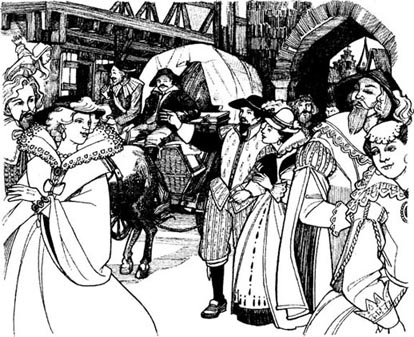
1616年，波卡洪塔斯和约翰·罗尔夫带着儿子来到了英国。随行的还有十个印第安人。经过了七周的航行，他们抵达了伦敦。
“伦敦可真大啊！”波卡洪塔斯说道，“这里有成百上千栋房子和成千上万的人！”
伦敦是个喧闹而令人兴奋的地方。波卡洪塔斯对一切都充满了兴趣。她走进各家商店，看那里摆放着的食品、衣服和书籍。她乘船沿泰晤士河来来回回地游览，看到很多富人的大房子。每天，她都会看到精彩的新奇事物。
然而伦敦也很脏，因为这里人太多了。河水不干净，水质很差。波卡洪塔斯的两位印第安同胞生病死了。
但波卡洪塔斯还是既快乐又兴奋。每天她都去拜访豪门望族，与一些富人和权贵交谈。伦敦的每个人都想见见她，同她聊天，并想成为她的朋友。
英国国王和王后听说了有关约翰·罗尔夫的妻子——这个来自弗吉尼亚的印第安姑娘——的事情，他们也想见见她。于是一天，波卡洪塔斯去拜见了詹姆斯国王和安妮王后。他们问起了她的父亲波瓦坦。
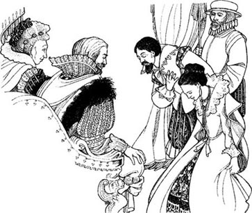
“我父亲是阿尔冈昆印第安人的国王，”她说，“他统领着众多臣民和很多村落。但我们的领土比英国安静多了。我们的人民了解森林、动物与河流。你们可以向我们学习，我们也可以向你们学习。我们要成为朋友。”
“我们当然要成为朋友了，”詹姆斯国王说，“‘詹姆斯敦’这个地方就是以我的名字命名的，所以我对它非常感兴趣。”
他们谈了一会儿之后，国王的妻子安妮王后说：“我有一封关于你的信，波卡洪塔斯。信是一个叫约翰·史密斯的人写的。他说在你还是个小姑娘的时候，他就是你的朋友了。是这样吗？”
有那么一会儿，波卡洪塔斯说不出话来。然后她说道：“约翰·史密斯的信？可他已经死了！”
安妮王后笑了。“死了？不，他就在英国。看，这就是那封信。”王后看着波卡洪塔斯问道，“怎么了，亲爱的？你不舒服吗？”
“不，不，我很好。我非常高兴。”
但那天晚上，波卡洪塔斯无法入睡。她非常兴奋。约翰·史密斯还没有死。他还活着，而且就在英国！可他在哪儿呢？
两天后，约翰·史密斯来见她了。
当然，他苍老了一些。然而她还记得他。他个头不高，但很有趣，令人兴奋而充满活力。他用那双好看的蓝眼睛冲她微笑着。“嗨，波卡洪塔斯，”他说，“你还记得我吗？”
她怎么会忘记他呢？她望着他，但什么也没说。约翰·罗尔夫看着他们。“这就是约翰·史密斯，亲爱的，”他说，“见到他你高兴吗？”
但波卡洪塔斯并不高兴。“不，”她说，“很抱歉。我一点也不高兴。”她茫然地望着窗外。她无法直视约翰·史密斯。
约翰·罗尔夫走了出去，史密斯在旁边等着。过了一会儿，他说：“你现在已为人妻，而且也是一位母亲了。”
“是的。”波卡洪塔斯看着他，努力想挤出笑容。
“我看上去有什么不同吗？”他问，“我知道自己变老了。”
“不，你没有什么变化，”她说，“但是——你为什么要离开弗吉尼亚？”
“我出了事故，”他说，“我当时病得很厉害。于是回到了英国，两年后我才慢慢好起来。”
“在詹姆斯敦，他们都告诉我说你已经死了。”
“死了？不，那不是我。”
“可你并没有告诉我啊！你连一封信也没有给我写——这八年里一封信也没有，约翰·史密斯！”
“可你当时还是个孩子啊，波卡洪塔斯。你那时还不识字呢！”
“好吧，可我现在识字了！”她生气地说道，“也许我当时是个孩子，约翰·史密斯，但我父亲把你交给了我——就在很久前的那天，在我父亲的村子里。你不记得吗？从那天起，我就开始爱上了你。”
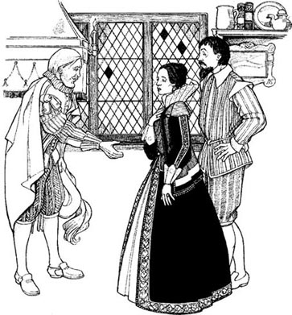
他用那双好看的蓝眼睛忧伤地望着她，他眼中的她此刻又变成了一个孩子。她记起了所有的往事。
“你并不爱我，”她说，“你从来就没爱过我。”
“我……不懂爱情，”他缓缓地说道，“你是首领的女儿，波卡洪塔斯，而我既不富有，也不是权贵。我至今未娶；或许我不了解女人吧。而且你当时还是个孩子，波卡洪塔斯。”
“我那时是个孩子——可我爱你，而你却走了，”她说，“八年来我没有你的任何音信。”
他很长时间都没说话。然后他开口了：“很抱歉，波卡洪塔斯。我错了。”
“我是那么的爱你，”她忧伤地说。这时门开了，她的小儿子托马斯走了进来。“可我现在有了儿子和丈夫，”她说，“而且他们爱我。你和我不能再成为朋友了。再见，约翰·史密斯。”
“再见，波卡洪塔斯。”他看了她一会儿，然后走出门外。她从此以后再也没见过他。
六个月后，约翰·罗尔夫说：“我们必须回弗吉尼亚了，亲爱的。那里还有工作在等着我。而且你也需要弗吉尼亚温暖的阳光。”
没错，波卡洪塔斯现在病了，而且英国冬季寒冷的降雨对她也没有好处。她什么也没说，准备动身。船从伦敦顺流而下，来到一座名为格雷夫森德的海边小镇。但当他们到达那里时，波卡洪塔斯病情加重，卧床不起。约翰·罗尔夫坐在妻子的床边，忧伤地望着她的脸。
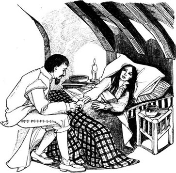
她微笑着对他说：“再见了，约翰。我要回家了——回到那片有着森林与河流的土地。”
* * *
波卡洪塔斯于1617年3月死于格雷夫森德。
有两件事使她闻名于世：她是第一个嫁给英国人并且来到了英国的美洲女性。她也是第一批去弗吉尼亚的英国人的好朋友。
她的丈夫约翰·罗尔夫回到了弗吉尼亚，在那里娶了一个英国女人。他于1622年在弗吉尼亚去世。波卡洪塔斯的儿子托马斯小的时候跟罗尔夫的家人生活在英国，但在1635年搬到弗吉尼亚生活。
约翰·史密斯没有再离开英国。他写了很多有关美洲的有趣的书，在那些书里他写到了波卡洪塔斯。他一直活到1631年，终身未娶。也许他无法忘记波卡洪塔斯最后一次跟他道别时的那双忧伤的黑眼睛。
ACTIVITIES: Before Reading
ACTIVITIES
Before Reading
1．Read the stroy introduction of the book. Are these sentences true? Tick one box for each sentence.
1) Pocahontas has blue eyes.
YES □／NO □
2) Pocahontas is the daughter of a King.
YES □／NO □
3) The English came to Virginia for a holiday.
YES □／NO □
4) The English call their town after their king.
YES □／NO □
5) The Indians lived in North America for a long time before 1607.
YES □／NO □
6) The Indians wanted the English to go home.
YES □／NO □
7) Pocahontas meets John Smith in Jamestown.
YES □／NO □
2．What happens in this story? Can you guess? Choose words to complete these sentences.
1) Pocahontas marries John Smith / another Englishman.
2) The Indians kill / don't kill John Smith.
3) The English and the Indians are enemies / good friends.
4) John Smith stays in Virginia / goes back to England.
5) Pocahontas stays in Virginia / visits England.
6) Pocahontas / John Smith dies when. she / he is still young.
7) The story has a happy / an unhappy ending.
ACTIVITIES: While Reading
ACTIVITIES
While Reading
1．Read Chapter 1. How many true sentences can you make from this table?
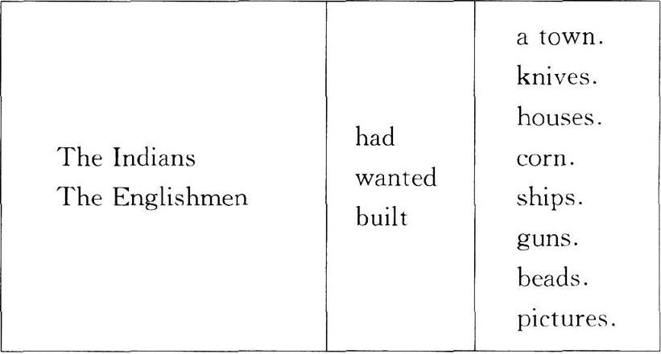
2．Read Chapters 2 and 3. Who said these words, and to whom?
1) 'They are a new people from over the sea.'
2) 'We want to live here, and be your friends.'
3) 'We don't want the English, or their King James.'
4) 'He has wonderful blue eyes — the colour of the sky.'
5) 'I am the King's daughter, and I say no!'
6) 'One day, we want these big guns too.'
7) '...friends are better than guns.'
8) 'We can't give them our corn every year!'
3．Before you read Chapter 4, can you guess what happens?
1) Do the Englishmen give any guns to Powhatan?
2) What happens between Pocahontas and John Smith?
4．Read Chapter 4. Here are some untrue sentences about it. Change them into true sentences.
1) The Englishmen had thousands of men.
2) Pocahontas never visited Jamestown.
3) Pocahontas taught John Smith many new things.
4) To Pocahontas, John Smith was the richest man in the world.
5) Pocahontas wanted John Smith for her friend.
6) Pocahontas didn't think about John Smith for two months.
5．Read Chapter 5, and answer these questions.
1) What did Powhatan want from John Smith?
2) How did Powhatan feel about John Smith's answer?
3) Where did the seven hundred Indians come from?
4) Why did the Indians put down their bows and arrows?
5) Why was it difficult for Pocahontas to visit John Smith?
6) What did the Englishmen and the Indians want?
7) How many people now lived in Jamestown?
8) Why did John Smith go home to England?
9) What did Pocahontas do when she left Jamestown?
6．Before you read Chapter 6, can you guess what happens? Choose one of these answers.
Pocahontas marries...
1) John Smith.
2) another Englishman.
3) an Indian.
7．Read Chapter 6. Choose the best question word for these questions, and then answer them.
Why / Who / What
1) ...did the Indians do to the Englishmen?
2) ...did the English take a hostage?
3) ...did Powhatan want more — his guns or his daughter?
4) ...did Pocahontas make friends with?
5) ...wanted to marry Pocahontas?
6) ...did he want to marry her?
8．Read Chapter 7. Are these sentences true (T) or false (F)? Change the false sentences into true ones.
1) Pocahontas was interested in everything in London.
2) Nobody in London wanted to be Pocahontas' friend.
3) Queen Anne told Pocahontas that John Smith was dead.
4) Pocahontas was a child when John Smith went away.
5) She was happy when John Smith came to see her.
6) The cold weather in England was bad for Pocahontas.
7) Pocahontas died when she was an old woman.
8) John Smith never went to North America again.
ACTIVITIES: After Reading
ACTIVITIES
After Reading
1．What did Powhatan say to Pocahontas in the forest? Put their conversation in the right order, and write in the speakers' names. Powhatan speaks first (number 3).
1) ______ 'Run to John Smith and put your arms over his head, before Opekankanu's stick comes down.'
2) ______ 'Yes, I can. But why must I do this, father? You are the King. You can say "no" to Opekankanu.'
3) ______ 'Listen, Pocahontas. When the men bring the Englishman in front of me and put his head on the stone, you must watch Opekankanu.'
4) ______ 'And then do I take John Smith away?'
5) ______ 'Of course I can say “no”. But I want John Smith to learn something.'
6) ______ 'Run? Run where, father?'
7) ______ 'He must learn that I am the King in this country. And a King can give life, or he can take it away.'
8) ______ 'Do I speak to Opekankanu?'
9) ______ 'No, first you must ask for his life. Say, “Father don't kill this man! ”Can you do this for me?'
10) ______ 'Learn what, father?'
11) ______ 'No, say nothing. Just watch him. But when he walks to the stone with his stick, get ready to run.'
2．Find these words in the word search below, and draw a line through them. The words go from left to right, and from top to bottom.
arrow, bead, bird, bow, chief, church, compass, corn, field, finger, fish, glass, gun, queen, stone, vegetables, walls, world
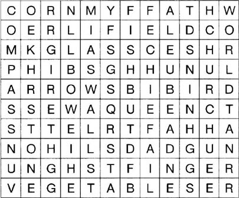
Now write down all the letters without a line through them. Begin with the first line, and go across each line to the end. There are 41 letters, and they make a sentence of 9 words.
1) What is the sentence?
2) Who said it in the story?
3) Where was the speaker at the time?
4) How was the speaker's life different now?
3．Here is a new illustration for the story. Find the best place in the story to put the picture, and answer these questions.
The picture goes in Chapter ______.
1) Who are the people in the picture?
2) Where are they — in which city and which country?
3) Why is the woman sad?
Now write a caption for the illustration.
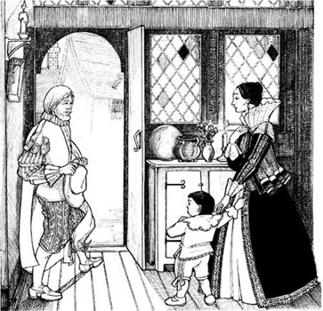
Caption: ________________________________.
4．Here is John Smith's letter to King James and Queen Anne. Circle the correct words.
Dear King James and Queen Anne
My friends tell / say me that Pocahontas is in / at London. I do / would like to see him / her very much. We were / are friends in Virginia. Her brother's father / father's brother wanted to kill / die me, but Pocahontas stopped / made him. She usually / often came to Jamestown, and she helped the English a lot / a little in those early days. She was a big / little girl then. Does she remember / forget me now? Perhaps I can / must see her in London. Please tell her about us / me, and say goodbye / hello to her from me.
John Smith
5．What did you think about the people in this story? Did you like them? Did you feel sorry for anybody? Choose some names, and complete some of these sentences.
Pocahontas / John Smith / Powhatan / John Rolfe / Opekankanu / Samuel Argall
1) I liked ______ because ______.
2) I didn't like ______ because ______.
3) I felt sorry for ______ when ______.
4) ______ was right to ______.
5) ______ was wrong to ______.
6) I was angry with ______ when ______.
封底